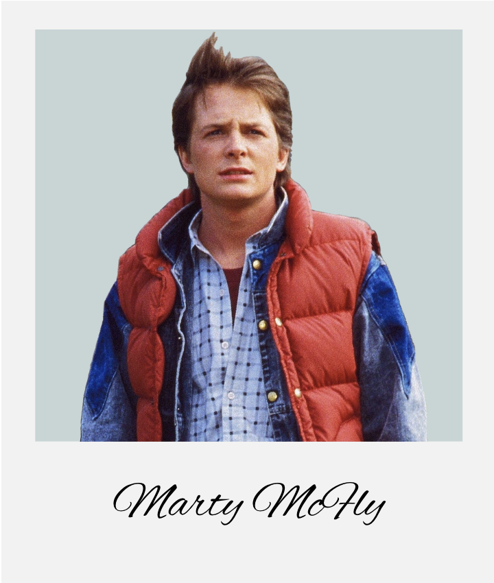

A Deeper Look into Parkinson's
What if the way you typed could tell a story about your brain health? Parkinson's Disease, a condition affecting millions, often whispers its first signs in the subtle changes to our everyday movements.
Every six minutes, someone in the United States is diagnosed with Parkinson's Disease. That's over 90,000 people each year facing a future with this progressive neurological disorder. For many, including beloved figures like Michael J. Fox and Muhammad Ali, the journey with Parkinson's is a public one, but for countless others, it's a personal battle fought with courage and resilience. This project is inspired by the need to bring greater understanding to a condition that touches so many lives, often silently at first.
Our Research Question
How can interactive data visualizations make the complex motor symptoms of Parkinson's Disease, particularly those detectable through fine motor tasks like hand movements and typing, more tangible and understandable for a general audience, thereby fostering empathy and awareness?

Motor Symptoms & The Hand
The symptoms you explore here – changes in hand function – are not just data points; they translate into daily challenges. Difficulty with writing can make signing documents or writing notes frustrating. Tremors or rigidity can make buttoning a shirt, using utensils, or holding a cup a slow and arduous process, impacting independence. These seemingly small motor changes can accumulate, affecting one's ability to perform daily activities.
How to Use This Visualization
- Explore the Model: Use your mouse to rotate the 3D hand model. Zoom in and out using your scroll wheel or pinch gestures.
- Hover for Info: Move your cursor over different parts of the hand (fingers, palm, wrist). Highlighted areas will display a tooltip with information about how Parkinson's can affect that specific part.
- What to Look For: Notice which areas are commonly impacted. Think about how these specific effects (e.g., tremor in the thumb, rigidity in the wrist) might translate to difficulties with daily tasks like writing or gripping objects.
The way Parkinson's affects the hands gives us a glimpse into its impact on fine motor control. But what about other everyday actions that require similar precision, like typing? The rhythm of our keystrokes can also tell a subtle story. Let's explore how these digital fingerprints can change, drawing upon our understanding of Parkinson's medications.
Typing Rhythm & Medication
The consistency of motor actions, like typing, can be altered by Parkinson's. This interactive "pulse" demonstrates representative typing rhythms. Select a medication category to see how treatment might influence these patterns. Below, a line chart visualizes Hold or Flight Times for a sequence of keystrokes.
Tempo:
1x
Hold Time: - ms
Flight Time: - ms
Chart Metric:
Show on Chart:
How to Use This Visualization
- Select Medication (for PULSE): Click on the medication buttons ("Levodopa," "DA," etc.) to load representative typing rhythm data for the "PULSE" animation for individuals on different treatments, or those with no medication. This draws from the Tappy Keystroke Dataset.
- Observe the PULSE: The large "PULSE" button will animate to simulate
keystrokes based on your selection.
- The duration it stays lit represents "Hold Time" (how long a key is pressed).
- The time between illuminations represents "Flight Time" (the delay between one key release and the next key press).
- Adjust Tempo: Use the "Tempo" slider to speed up or slow down the simulation. This can help you better perceive the rhythm.
- Information Box: The box below the pulse will display the Hold Time and Flight Time values for the current simulated keystroke from your selection.
- Interpret the Line Chart:
- The chart below the PULSE button displays either Hold Times or Flight Times for a sequence of keystrokes. Use the "Chart Metric" toggles to switch between them.
- Use the "Show on Chart" checkboxes to select which medication lines are visible.
- Each colored line represents a different medication category.
- The X-axis shows the keystroke event index.
- The Y-axis shows the selected metric (Hold Time or Flight Time) in milliseconds (ms).
- When the "PULSE" button animates, a marker will appear on the chart highlighting the current data point for the active medication's line (if visible).
- Observe how patterns (level, variability) differ across medications and metrics.
- What to Look For: Pay attention to the consistency of the hold times and flight times in the PULSE animation. Are they regular, or do they vary significantly? How does the rhythm change when you select different medication categories for the PULSE? Compare this to the overall trends and variability visible in the line chart.
We've seen a simulation of how typing rhythms can differ. Now, you have the chance to (simulatively) compare your own typing patterns against a representative example from the Tappy dataset, illustrating how technology might one day help us understand these nuances even better.
"I have Parkinson's disease. I am not Parkinson's disease. My identity is not based on the illness, but on who I am as a person. It is a part of my life, not the entirety of it."
Analyze Your Typing Patterns
Changes in typing speed and accuracy can be a significant hurdle for those with Parkinson's who rely on computers. Simple tasks like sending an email or navigating a smartphone may take longer and require more effort. This interactive test allows you to explore these nuances.
How to Use This Visualization
- Select a Comparison Persona: Use the dropdown menu to choose a de-identified persona whose typing data (representing a pattern seen in some individuals with Parkinson's from the Tappy dataset) will be compared against yours.
- Start Typing: Click the "Click to start" overlay. A sentence will appear. Type the displayed sentence; your typing will appear over the prompt.
- View Real-time Chart: As you type, a line chart will plot your latency (time between keystrokes) in one color, and the selected persona's latency in another.
- Interpret the Chart:
- The X-axis shows the character index (which keystroke in the sequence).
- The Y-axis shows the latency in milliseconds (ms).
- What to Look For: Compare your line to the persona's line. Is your average latency generally higher or lower? Is your line smoother or more "spiky" (variable)?
- Reset: Click the "Reset" button to try again with a new sentence or a different comparison persona.
Click to start
Key Takeaways & Conclusion
One Clear, Memorable Message
Technology offers powerful new lenses to understand and potentially detect subtle changes in motor function, highlighting that even everyday actions like typing can hold valuable insights into neurological health.
Why Our Visualizations Demonstrate This
Our interactive hand model makes the physical impact of Parkinson's tangible, while the typing rhythm simulation and analysis tool directly connect a common digital interaction to the underlying motor control challenges. By allowing users to see, feel, and even contribute their own (simulated) data, these visualizations powerfully illustrate how technology, using datasets like Tappy, can decode the nuanced language of movement.
Call to Action: Learn More & Take Action
Empower yourself with knowledge. Explore the resources linked in the next section to learn more about Parkinson's Disease, support research, or find help if you or a loved one are affected. Consider how technology in your own life might be leveraged for health awareness and discuss any concerns about motor symptoms with a healthcare professional. Early understanding and action can make a significant difference.
Resources and Support
Links to Parkinson's Organizations
- Parkinson's Foundation: www.parkinson.org - Comprehensive information, resources, and support for patients and families.
- The Michael J. Fox Foundation for Parkinson's Research: www.michaeljfox.org - Leading research initiatives and patient advocacy.
- American Parkinson Disease Association (APDA): www.apdaparkinson.org - Support, education, and research programs.
Further Reading and Research
- Explore the "Understanding Parkinson's" section on the Parkinson's Foundation website.
- Search for "keystroke dynamics Parkinson's disease" on Google Scholar or PubMed for research articles.
- Visit the National Institute of Neurological Disorders and Stroke (NINDS) Parkinson's Disease Information Page.
- Tappy Keystroke Dataset on PhysioNet: For those interested in the source data: https://physionet.org/content/tappy/1.0.0/
Support Resources for Patients and Families
- Helplines: Many Parkinson's organizations offer toll-free helplines for
information and support.
- Parkinson's Foundation Helpline: 1-800-4PD-INFO (473-4636)
- Support Groups: Local and online support groups provide a valuable way to connect with others affected by Parkinson's. Check the websites of the major organizations for listings.
- Educational Materials: Brochures, webinars, and articles are widely available from the organizations listed above.
Write Up
Understanding Parkinson's Disease
Brief medical overview: Parkinson's Disease (PD) is a progressive neurodegenerative disorder. This means it's a condition where cells in a specific part of the brain gradually break down and are lost. Primarily, Parkinson's affects dopamine-producing neurons (nerve cells) in an area of the brain called the substantia nigra. Dopamine is a crucial neurotransmitter that plays a vital role in regulating movement, motivation, and mood. As these dopamine-producing cells die off, the brain receives less dopamine, leading to the characteristic symptoms of the disease.
Who it affects: Parkinson's Disease can affect anyone, but it is more common in older adults, with the average age of onset being around 60 years old. Men are slightly more likely to develop Parkinson's than women. While it's less common, early-onset Parkinson's can occur before the age of 50. Globally, millions of people live with Parkinson's, and as the population ages, the number of individuals affected is expected to increase. It's estimated that nearly one million people are living with PD in the U.S. alone.
Why early detection matters: While there is currently no cure for Parkinson's Disease, early detection and diagnosis are crucial. Initiating treatment and therapeutic interventions (like physical and occupational therapy) sooner can help manage symptoms more effectively, potentially improve quality of life, and slow the progression of some complications. Furthermore, an early diagnosis allows individuals and their families more time to understand the condition, plan for the future, and build a strong support network. Research into new therapies also often benefits from the participation of individuals in the early stages of the disease.
Why This Project? The Motivation
Why this visualization approach is better than existing explanations: Reading about Parkinson's symptoms like bradykinesia (slowness of movement) or tremors can be informative, but often abstract. Static diagrams and text descriptions can only go so far. Our interactive visualizations transform these concepts into dynamic experiences. Instead of just reading about how hand movements are affected, you can see and interact with a model that demonstrates these changes. Instead of just learning that typing patterns can alter, you can feel a simulated rhythm and even test your own.
What your interactive experience enables that static resources don't: Static resources provide information; interactive experiences foster engagement and intuition. With this project, you're not just a passive recipient of facts. You can actively explore how specific hand areas are impacted, compare different medication effects on motor rhythm, and even analyze your own typing data. This direct engagement allows for a more personal and memorable understanding of how Parkinson's manifests.
The gap your project fills in Parkinson's education: While many excellent resources explain the medical aspects of Parkinson's, there's a gap in providing intuitive, experiential learning tools for the general public, patients, and their families. This project aims to bridge that gap by translating complex data and symptoms into accessible visual narratives. It's about making the invisible, or subtly visible, symptoms of Parkinson's more concrete, promoting earlier awareness and deeper empathy.
Dataset: The Tappy Keystroke Dataset
This project utilizes the Tappy Keystroke Dataset, a comprehensive collection of typing behavior data published on PhysioNet in October 2017. The dataset contains keystroke logs from over 200 participants, both with and without Parkinson's Disease, collected over periods ranging from weeks to months as they typed naturally on their personal computers.
Data Collection Process
Participants from the United States, Canada, United Kingdom, and Australia installed a custom keystroke recording application called "Tappy" that captured their typing behavior during everyday computer use—including email, word processing, and web browsing. The software recorded key press and release timestamps with millisecond precision, providing detailed timing information for each keystroke event.
Key Measurements
- Hold Time: Duration between key press and release (in milliseconds)
- Flight Time: Time between releasing one key and pressing the next
- Latency: Time between pressing consecutive keys
- Hand Transitions: Patterns of left-right hand movement during typing
Participant Information
Each participant provided demographic and medical information including age, gender, Parkinson's diagnosis status, symptom severity, medication usage (Levodopa, Dopamine Agonists, MAO-B inhibitors), and self-reported impact on daily activities. This rich metadata enables analysis of how different factors influence typing patterns.
Research Significance
This dataset supports groundbreaking research demonstrating that routine computer interactions can detect early-stage motor changes in Parkinson's Disease. The findings suggest that digital biomarkers derived from everyday typing could potentially serve as accessible screening tools, making this dataset particularly valuable for understanding the subtle ways neurological conditions manifest in daily activities.
The Science Behind the Symptoms
How Dopamine Loss Affects Movement
Dopamine acts like a messenger in the brain, facilitating smooth, coordinated muscle movement. Think of it as the oil that keeps the gears of your motor system running efficiently. When dopamine levels decrease due to the loss of dopaminergic neurons in the substantia nigra, the brain's ability to control movement is impaired. This doesn't mean a person can't move, but movements become less automatic, slower, and more difficult to initiate and control. This disruption leads to the hallmark motor symptoms of Parkinson's like tremors, rigidity, and bradykinesia.
Connection Between Brain Changes and Observable Symptoms
The substantia nigra is part of a larger network in the brain called the basal ganglia, which is critical for motor control, learning, and habit formation. As dopamine-producing cells in the substantia nigra degenerate, this entire network is disrupted.
- Tremors (shaking): Often start in a limb, frequently the hand or fingers, especially at rest. This is thought to be due to irregular signaling in the basal ganglia.
- Bradykinesia (slowness of movement): Makes simple tasks time-consuming and difficult. Everyday actions like walking, dressing, or even speaking can become slow and labored.
- Rigidity (stiffness): Can occur in any part of the body, limiting the range of motion and causing pain.
- Postural instability (impaired balance): Can lead to problems with balance and coordination, increasing the risk of falls.
These observable symptoms are direct outward manifestations of the underlying dopamine deficiency and its impact on brain circuits.
Why Typing/Motor Tasks Reveal These Changes
Fine motor tasks, such as typing, writing, or buttoning a shirt, require precise coordination and rapid, sequential movements – all heavily reliant on the dopamine-dependent motor pathways.
- Typing: Involves quick, repetitive finger movements, precise timing between keystrokes (flight time), and consistent pressure (hold time). Parkinson's can lead to slower typing speed, increased variability in the time taken to press a key or move between keys, and sometimes a "freezing" or hesitation during typing.
- Handwriting: Often becomes smaller (micrographia) and more cramped.
These tasks act as sensitive indicators because they push the motor system to perform at a high level of precision, making even subtle dysfunctions due to dopamine loss more apparent.
Understanding Parkinson's Medications
Parkinson's disease treatment focuses on managing symptoms by addressing the underlying dopamine deficiency in the brain. Different medications work through various mechanisms, each with unique effects on motor control and typing patterns observable in our dataset.
Levodopa (L-DOPA)
Levodopa remains the gold standard treatment for Parkinson's disease. This medication crosses the blood-brain barrier and converts to dopamine, directly replenishing what the brain can no longer produce adequately. Patients on Levodopa often experience significant improvement in motor symptoms, including more consistent typing rhythms and reduced tremor-related keystroke variability. However, long-term use can lead to "wearing-off" periods and dyskinesias (involuntary movements), which may create distinct patterns in typing data as medication levels fluctuate throughout the day.
Dopamine Agonists (DA)
These medications mimic dopamine's action by directly stimulating dopamine receptors in the brain. Unlike Levodopa, dopamine agonists don't require conversion and provide more steady symptom control. In typing patterns, patients on dopamine agonists may show more consistent hold times and flight times compared to those experiencing Levodopa fluctuations. Common dopamine agonists include pramipexole, ropinirole, and rotigotine patches, each with slightly different timing profiles that can influence daily typing rhythm variations.
MAO-B Inhibitors
Monoamine oxidase-B inhibitors work by blocking the enzyme that breaks down dopamine, effectively extending the life of available dopamine in the brain. Medications like selegiline and rasagiline are often used in early-stage Parkinson's or as adjuncts to other treatments. Patients on MAO-B inhibitors typically show more subtle improvements in typing consistency, with less dramatic fluctuations in keystroke timing compared to those on Levodopa alone.
Other Medications
This category encompasses various treatments including COMT inhibitors (which extend Levodopa's effectiveness), anticholinergics (which help with tremor), and amantadine (which can reduce dyskinesias). Each medication class contributes differently to motor control, creating unique fingerprints in typing behavior that researchers can identify and analyze.
Medication Timing and Motor Fluctuations
The timing of medication doses significantly impacts motor symptoms and, consequently, typing patterns. Many patients experience "on" periods (when medication is working well) and "off" periods (when symptoms return). These fluctuations are particularly evident in keystroke data, where typing speed, rhythm consistency, and error rates can vary dramatically within the same day. Understanding these patterns helps both patients and physicians optimize medication timing for better quality of life.
Personalized Treatment Approaches
No two patients respond identically to Parkinson's medications. Factors including age at diagnosis, symptom severity, other health conditions, and individual brain chemistry all influence treatment effectiveness. The keystroke data in our dataset reflects this diversity, showing how the same medication can produce different typing pattern improvements across individuals. This personalization aspect makes keystroke analysis particularly valuable for monitoring treatment response and adjusting medication regimens.
Living with Parkinson's
The journey with Parkinson's Disease is unique for every individual, but understanding its broader impact and the resources available can provide strength and hope.
How Technology and Data Can Help Patients and Doctors
Technology is becoming an increasingly powerful ally in understanding and managing Parkinson's Disease.
- Objective Measurement: Wearable sensors and apps (like those that could analyze typing patterns, voice, or gait) can provide objective, continuous data on motor symptoms, offering a more detailed picture than infrequent clinical visits.
- Early Detection Research: Researchers are exploring how data from everyday interactions (like typing) could potentially contribute to identifying early warning signs of PD, even before more obvious symptoms appear.
- Personalized Treatment: By tracking symptoms and medication responses more closely, doctors may be able to better tailor treatment plans to an individual's specific needs.
- Remote Monitoring: Technology allows for remote monitoring of patients, which can be especially helpful for those in rural areas or with mobility challenges.
- Assistive Technologies: From specialized computer mice to voice-activated software, technology offers tools to help people with PD navigate daily tasks.
Hope and Treatment Advances
While a cure for Parkinson's remains the ultimate goal, the landscape of treatment and research is continually evolving, offering significant hope.
- Symptom Management: Current medications, like Levodopa, can effectively manage motor symptoms for many years, dramatically improving quality of life. New drug delivery systems and formulations are being developed to provide more consistent symptom control and reduce side effects.
- Deep Brain Stimulation (DBS): For some individuals with advanced PD whose symptoms are not adequately controlled by medication, DBS surgery can be a life-altering option.
- Disease-Modifying Therapies: The most exciting area of research focuses on therapies that could slow, stop, or even reverse the progression of Parkinson's by targeting the underlying disease processes. Clinical trials are underway for various promising approaches, including gene therapies and neuroprotective agents.
- Focus on Non-Motor Symptoms: There's increasing recognition and research into managing the often-debilitating non-motor symptoms of PD, such as sleep disorders, depression, and cognitive changes.
The global research community is actively working on multiple fronts, bringing us closer to new breakthroughs every year.
Now that we've explored the science and human impact of Parkinson's, let's dive into the interactive visualizations themselves to see these concepts in action.
Understanding the Data: Interpreting Visualizations
What the Visualizations Show and Why It Matters
- Hand Visualization: This 3D model highlights areas of the hand commonly affected by Parkinson's motor symptoms like tremor and rigidity. Hovering over different parts provides information on how these symptoms manifest. It matters because it makes the abstract concept of "motor impairment" tangible and relatable to everyday hand function.
- Pulse Visualization (Typing Rhythm): This simulates the rhythm of keystrokes based on 'Hold Time' (how long a key is pressed) and 'Flight Time' (time between releasing one key and pressing the next), using data patterns from the Tappy Keystroke Dataset. It demonstrates how these timings can become more variable or prolonged in individuals with PD, even varying with medication. This matters because it illustrates a subtle, quantifiable way motor control can be affected.
- Typing Test & Analysis: This section allows you to see a visual representation (line chart) of your own keystroke latencies compared to a representative Parkinson's patient's pattern from the Tappy dataset. It matters because it provides a direct comparison, showing how technology can potentially identify these subtle motor biomarkers.
How to Interpret the Patterns Users See
- Hand Model: Areas that light up represent common sites of PD symptoms. The descriptions aim to connect these to functional difficulties.
- Pulse Visualization:
- Longer/Shorter Pulses (Hold Time): The "PULSE" button's illumination duration represents hold time. Notice if it's consistently long, short, or varies greatly.
- Longer/Shorter Gaps (Flight Time): The time between pulses represents flight time. Observe the rhythm – is it steady, or are there irregular pauses?
- Variability: Increased inconsistency in either hold or flight times can be a key indicator.
- Typing Test Line Chart:
- Your Line (e.g., Blue): Shows your latency (time between successive keystrokes) for each character you type.
- Comparison Line (e.g., Red/Dashed): Shows a representative pattern from a dataset of an individual with Parkinson's.
- Look for: Differences in average latency (is one line generally higher?), variability (is one line much 'spikier' or more erratic than the other?), and overall trends.
Limitations and Considerations
- Generalization: The "Parkinson's patterns" shown are representative examples from datasets and do not reflect every individual's experience with PD. Parkinson's symptoms vary greatly from person to person.
- Not a Diagnostic Tool: These visualizations are for educational and awareness purposes only. They are not diagnostic tools. Any concerns about motor symptoms or potential Parkinson's should be discussed with a qualified healthcare professional.
- Data Simplification: For clarity, some complexities of the data (like specific key transitions or exact pressure) are simplified in these visualizations.
- Typing Style: Individual typing habits, fatigue, and even keyboard type can influence typing patterns, independent of any medical condition.
Interpretation Guide: A Deeper Dive into Typing Data
What "Normal" vs. "Atypical" Patterns Look Like (in Typing Data)
- "Normal" or Control Patterns: Typically, individuals without motor impairments exhibit relatively consistent and faster keystroke latencies and hold times. On a line chart, this might look like a line that is generally lower (faster) and less "spiky" (more consistent). The rhythm in the pulse visualization would appear more regular.
- "Atypical" Patterns (suggestive of PD-related changes, for educational
illustration):
- Increased Latency/Flight Time: The time taken to move between keys may be longer on average. The line chart for latency might be generally higher. The "pulse" may have longer gaps.
- Increased Hold Time: Keys might be held down for longer durations. The "pulse" might stay lit longer.
- Increased Variability: This is a key characteristic. Both latency and hold times might fluctuate more significantly from one keystroke to the next. The line chart would appear more "spiky" or erratic. The "pulse" rhythm would be less steady.
- Bradykinesia Effect: Overall slowness can manifest as generally higher values for both hold and flight times.
- Freezing/Hesitation: May appear as unusually long latencies or flight times at certain points.
Why Variations Occur
- Individual Differences: Everyone has a unique typing style, speed, and rhythm, even without any medical condition.
- Parkinson's Heterogeneity: PD affects individuals differently. The type, severity, and combination of motor symptoms vary widely.
- Medication Effects: As seen in the "Pulse Visualization," medications can alter motor performance, sometimes improving consistency and speed, but effects can fluctuate ("on-off" periods).
- Task Complexity: The specific keys being pressed (e.g., common vs. rare transitions, same hand vs. alternating hands) can influence timing.
- Fatigue/Attention: Like anyone, individuals with PD may experience changes in performance due to fatigue or lapses in attention.
- Disease Progression: Symptoms typically change over time as the disease progresses.
Clinical Significance of the Measurements (Hold Time, Latency/Flight Time)
While this project is not for diagnosis, these metrics are of interest in clinical research for several reasons:
- Objective Biomarkers: Keystroke dynamics offer a way to collect objective, quantifiable data about motor function, which can be more reliable than subjective assessments alone.
- Sensitivity to Subtle Changes: Typing can reveal subtle motor impairments that might not be obvious in gross motor tasks, potentially aiding in earlier detection research.
- Monitoring Disease Progression: Changes in these metrics over time could potentially help track how Parkinson's is progressing in an individual.
- Assessing Treatment Efficacy: Researchers can use these measures to evaluate how well different treatments or interventions are working to improve motor control.
- Non-Invasive and Accessible: Typing data can be collected easily and non-invasively using standard keyboards, making it a practical tool for research and potentially for remote patient monitoring in the future.
Important Note: The interpretation of these metrics in a clinical setting is complex and requires sophisticated analysis by trained professionals, considering a wide range of factors.
Methodology Notes
Data Collection (Underlying PD Patterns)
The representative Parkinson's patterns and data shown in these visualizations are based on anonymized datasets, primarily the Tappy Keystroke Dataset, from research studies involving individuals with Parkinson's Disease and control participants. In these studies, participants typically perform standardized typing tasks or have their natural typing recorded on computer keyboards. Specialized software records the precise timing of each keystroke, including when a key is pressed down and when it's released. Demographic and clinical information (like medication status and symptom severity, where ethically permissible and consented) is also often collected.
Why These Specific Metrics Were Chosen (Hold Time, Latency/Flight Time)
- Hold Time (Duration of Key Press): This metric can reflect aspects of motor control such as bradykinesia (slowness in completing a movement) or rigidity (stiffness affecting the ability to release a key quickly).
- Latency/Flight Time (Time Between Key Presses): This measures the speed and coordination of initiating the next movement. It can be affected by bradykinesia, tremor (interfering with smooth transitions), and difficulties with sequencing movements.
These metrics are relatively straightforward to measure, have been shown in research to differ between individuals with PD and controls, and can be intuitively understood in the context of typing rhythm.
Reliability and Validity Considerations
- Reliability: Keystroke dynamics have shown good test-retest reliability in research settings, meaning individuals tend to produce similar patterns when tested multiple times under similar conditions (though natural variation always exists).
- Validity: Studies have demonstrated that these metrics can validly differentiate between groups (e.g., PD vs. controls) and can correlate with clinical measures of motor impairment. However, their predictive validity for individual diagnosis or fine-grained tracking is still an active area of research.
- Confounding Factors: It's important to acknowledge that factors like age, typing skill, fatigue, keyboard type, and even mood can influence these metrics. Research methodologies aim to control for or account for these variables. The data presented here is simplified for educational purposes.